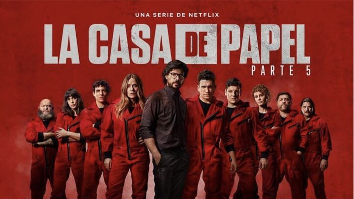

10 melhores séries para assistir na Netflix em 2023
The Witcher (2019)
Baseada na série literária de contos de fantasia do escritor polonês Andrzej Sapkowski, The Witcher ("O Feiticeiro") se passa num mundo de fantasia dominado pelo caos e habitado por seres monstruosos. O protagonista é Geralt de Rivia, um mercenário caçador de monstros que tem superpoderes.
The Sandman (2022)
Baseada na aclamada série de histórias em quadrinhos de Neil Gaiman, “The Sandman” se tornou uma das produções mais aguardadas da Netflix dos últimos anos. Na história, quando o Rei do Sonho (também conhecido como Sandman) é capturado por um mago e mantido em cativeiro por uma década, a humanidade passa a sofrer inúmeras consequências.
Wandinha (2022 - )

Um dos maiores sucessos dos últimos tempos da Netflix é a série “Wandinha”, estrelada pela atriz Jenna Ortega e dirigida pelo aclamado realizador Tim Burton. Baseado nas histórias da Família Addams, Wandinha segue a jovem menina sombria e a sua mudança para um internato com outros estudantes peculiares. Na escola, Wandinha vai se envolver uma investigação de um monstro que está ameaçando a vida de seus colegas, assim como desenvolver uma amizade improvável com a sua colega de quarto, a energética Enid.
Peaky Blinders (2013 - 2022)
A Inglaterra de 1919 é o cenário para a história sangrenta de Peaky Blinders, uma série que apresenta uma família de gangsters liderada por Tommy Shelby e suas atividades ilegais logo após a I Guerra Mundial. A série é inspirada na história real de uma gangue inglesa conhecida por este lendário nome.
Stranger Things (2016 - )
Esta série de ficção-científica e terror é ambientada na década de 1980. Stranger Things está repleta de referências e homenagens às produções daquela época. Quando o menino Will desaparece nos bosques da pequena cidade de Hawkins, em Indiana, os seus amigos e familiares embarcam em uma busca desesperada. Com a ajuda de uma estranha menina com poderes telecinéticos, os nossos heróis encontram a passagem para um mundo desconhecido e assustador. Criada pelos irmãos Duffer, Stranger Things recebeu duas indicações ao Globo de Ouro por sua primeira temporada.
A Vizinha da Mulher na Janela (2022)
Estrelado por Kristen Bell (The Good Place), A Vizinha da Mulher na Janela é uma minissérie que reúne o melhor dos dramas policiais com uma pitada de comédia. Na história, Anna é uma mulher deprimida que passa as noites bebendo vinhos e tomando remédios para ansiedade. Certo dia, ela presencia um assassinato na casa vizinha. No entanto, ninguém acredita nela e, aos poucos, Anna começa a duvidar da realidade à sua volta.
Dahmer: Um Canibal Americano(2022 -)
Uma série baseada numa história real. Jeffrey Dahmer assassinou 17 rapazes em uma década e demorou muito para ser identificado pela polícia. Esta é uma série de serial killer com crimes violentos, que, apesar do sucesso, também chocou muitas pessoas e gerou críticas por parte das famílias das vítimas.
The Walking Dead (2010 -)
Alguma dúvida de que The Walking Dead já é um clássico? Lá se vão 10 anos e 10 temporadas. Haja sucesso, não é mesmo? Para quem ainda não começou a ver, a 1ª temporada mostra o policial Rick Grimes sendo ferido gravemente durante uma operação. Quando sai do coma, encontra um mundo completamente devastado e sombrio, onde pessoas mortas têm a capacidade de andar...
Breaking Bad (2008 - 2013)

Após descobrir um câncer no pulmão, o endividado professor de química Walter White decide desenvolver metanfetamina com um ex-aluno para pagar as dívidas e dar uma vida melhor aos filhos. Com um protagonista extremamente duvidoso, a série rapidamente se tornou sucesso de público. Até entrou para o livro Guinness World Records como a série com a melhor avaliação da crítica de todos os tempos. Exibida originalmente pela AMC nos Estados Unidos, Breaking Bad recebeu 16 Emmys e 2 Globos de Ouro.
La Casa de papel (2017 - 2021)
O grande fenômeno latino da Netflix, La Casa de Papel foi o primeiro grande hit das produções adquiridas pela empresa em outras línguas que não o inglês. Originalmente, a história dos ambiciosos assaltantes que planejam o assalto do século nem sequer era para ser passada na empresa de streaming, masna televisão espanhola. Foi através da Netflix que a série ganhou o Brasil e o mundo. Ainda bem!
Brooklyn Nine-Nine ou Lei e Desordem (2013 -)
Super bem avaliada pelo público e vencedora de vários prêmios, entre os quais 2 Globo de Ouro (Melhor Série de comédia e Melhor Ator para Andy Samberg), Brooklyn 99 fez muitos fãs no Brasil desde 2013. Numa delegacia da cidade de Nova York, a rotina de uma equipe um tanto relaxada muda completamente após a chegada do capitão Ray Holt, que pretende pôr ordem na casa. Garantia de muitas gargalhadas!